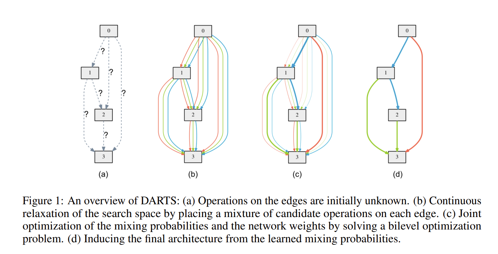
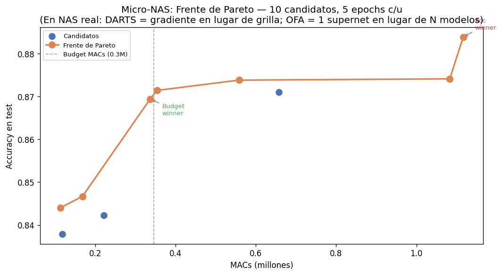
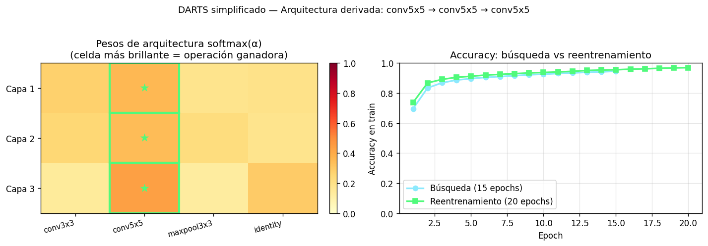
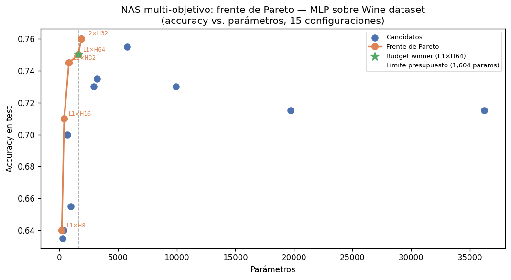

El frente de Pareto en NAS

Automatizando el diseño de arquitecturas óptimas
El paso del diseño manual (intuición humana) al diseño automatizado. Subcampo del AutoML que usa algoritmos para descubrir la arquitectura óptima.
HW-NAS (Hardware-Aware NAS)
En compresión, se busca el mejor equilibrio (Trade-off) entre precisión y restricciones de hardware (Latencia, FLOPs, Memoria RAM/SRAM, Energía).
L = Error(red) + α · max(0, Latencia(red) - Latenciatarget)
El "universo" de arquitecturas posibles.
Macro:
estructura global.
Micro (Cell-based): diseño de una "célula" óptima que se
apila (reduce drásticamente el espacio).
Cómo explorar el espacio.
Fuerza bruta: probar
exhaustivamente todas las combinaciones, es computacionalmente
inviable.
Reinforcement Learning / Evolutivos: discretos, pero
computacionalmente costosos.
Gradientes (DARTS): relaja a un espacio
continuo. Suma ponderada de operaciones, extremadamente rápido en pocas GPUs.
Cómo saber si es buena sin entrenar desde cero.
Weight
Sharing: se entrena una gigantesca Superred de donde heredan los pesos.
Zero-cost Proxies: métricas matemáticas previas al entrenamiento.
Reinforcement Learning — NASNet (2017)
Un controlador RNN genera descripciones de arquitecturas. Cada arquitectura candidata se entrena y evalúa; su precisión es la recompensa para el controlador.
Costo: ~1800 GPU-days (450 GPUs × 4 días)
Algoritmos evolutivos — AmoebaNet (2018)
Parte de una población de arquitecturas. En cada generación, muta las mejores (agrega/cambia operaciones) y elimina las peores.
Costo: ~3150 GPU-days
El problema compartido
Cada candidato se entrena desde cero para obtener señal de calidad. Con espacios de miles de arquitecturas posibles, el costo es prohibitivo.
Idea central: en lugar de evaluar cada arquitectura por separado, relajar el espacio discreto a uno continuo y optimizar con gradiente.
ō(i,j)(x) = Σo ∈ O softmax(αo(i,j)) · o(x)
Cada conexión entre nodos es una suma ponderada de todas las operaciones candidatas (conv3×3, conv5×5, maxpool, identity…). Los pesos α son parámetros aprendibles.
Búsqueda
Optimiza W (pesos de la red) y α (pesos de arquitectura) conjuntamente por gradiente descendente.
Derivación
Al terminar, argmax(α) por conexión selecciona la operación
ganadora → arquitectura discreta final.
Costo
~4 GPU-days frente a ~1800 de NASNet. 100× más rápido. Una GPU de consumo alcanza.
Liu et al., DARTS: Differentiable Architecture Search, ICLR 2019. arxiv:1806.09055

Ya vimos que buscar la arquitectura es un juego de equilibrios. Queda la otra gran pregunta: ¿cómo sabemos si una arquitectura es buena sin gastar horas entrenándola?
1. Low-fidelity estimates
Entrenar con imágenes más pequeñas, menos epochs o un subconjunto de datos. Barato, pero introduce sesgo: lo que es rápido en baja fidelidad no siempre gana a alta fidelidad.
2. Weight sharing
Todos los candidatos comparten los mismos pesos (como en DARTS o OFA). Se entrena una sola supernet y cada sub-arquitectura hereda sus pesos, eliminando el coste de N entrenamientos independientes.
3. Zero-cost proxies
La más radical: se analiza la arquitectura sin entrenarla ni una sola vez, solo observando cómo fluye la información a través de ella con pesos aleatorios.
Rompen el ciclo diseñar → entrenar → evaluar. Predicen la calidad de una red a partir de sus pesos en la inicialización (aleatorios, antes de ver datos). Como medir el motor de un coche antes de llevarlo a la pista.
SNIP — sensibilidad al gradiente
Mide cuánto cambia la pérdida si se elimina virtualmente cada conexión. Una arquitectura con alta sensibilidad tiene estructura potente para aprender.
NASWOT — mapas de activación
NAS Without Training. Pasa un lote por la red e inspecciona las activaciones: si imágenes distintas activan patrones únicos, la red tiene alta capacidad de representación y probablemente aprenderá bien.
SynFlow — flujo de sinapsis
Evalúa cómo se propaga el producto de los pesos por las capas. Detecta arquitecturas propensas a gradientes explosivos o desvanecientes antes de gastar un solo segundo de cómputo.
| Ventaja | Desventaja |
|---|---|
| Evaluar una arquitectura toma milisegundos | Correlación imperfecta con el rendimiento final |
| Sin GPUs: filtrar millones de candidatos en minutos | Sensibles a la inicialización de pesos aleatoria |
| Ahorro masivo de energía | Métricas ruidosas; a veces prefieren redes excesivamente complejas |
Enfoque híbrido (estado del arte)
Zero-cost proxy para descartar el 99% de arquitecturas mediocres en minutos → el 1% restante se evalúa con métodos más pesados (entrenamiento parcial o DARTS). La forma del recipiente importa casi tanto como lo que contiene.
Accuracy y eficiencia suelen ser enemigos: más precisión requiere más parámetros. NAS multi-objetivo trata la eficiencia como una restricción geométrica del espacio de búsqueda, no como algo secundario.
Función de recompensa
En lugar de optimizar solo el error, se "castiga" a los modelos lentos:
Reward = Acc(m) × (Lat(m) / Lattarget)β
β controla la severidad del castigo por latencia. Si el modelo es más lento que el objetivo, su recompensa cae drásticamente aunque sea muy preciso.
Espacios de búsqueda conscientes del hardware
Limitar las operaciones candidatas a las que son eficientes en el hardware objetivo: depthwise separable convolutions (MobileNet), operaciones con acceso de memoria contiguo…
ProxylessNAS mide la latencia directamente en el dispositivo real (un teléfono Android) durante la búsqueda, para que el algoritmo aprenda qué operaciones son lentas en ese procesador.
Como no existe una única "mejor" red, NAS busca un conjunto de soluciones óptimas. En una gráfica accuracy (eje Y) vs. tamaño (eje X):
Frente de Pareto
Modelos en la "frontera óptima": no podés mejorar su precisión sin aumentar el tamaño, ni reducir el tamaño sin perder precisión. Todo punto debajo de la frontera es subóptimo.
Elección del punto
Una vez hallada la frontera, elegís el modelo según tu restricción de hardware: "el más preciso que pese menos de 5 MB", "el más pequeño que supere 90% de accuracy".
OFA: toda la frontera de una vez
En lugar de buscar un punto por dispositivo, OFA entrena una supernet que cubre toda la frontera. Cada sub-red extraída ya está en el frente de Pareto.
La latencia no es constante: depende del chip (CPU de servidor, GPU de escritorio, NPU de móvil). Hay dos enfoques para incorporarla al ciclo de búsqueda:
Medición directa (on-device)
El algoritmo envía la arquitectura candidata a un dispositivo real, ejecuta un benchmark y devuelve el tiempo en ms.
Problema: extremadamente lento con miles de candidatos. Solo viable para validación final o muestras pequeñas.
Tablas de consulta (lookup tables)
Truco de MnasNet: se pre-calcula la latencia de cada operación individual (conv 3×3 con 64 canales, depthwise conv…) en el hardware objetivo. Durante la búsqueda, la latencia total se estima sumando los tiempos de cada pieza.
Resultado: estimación en microsegundos por candidato, sin necesitar el dispositivo físico durante la búsqueda.
Patrón típico: lookup table durante la búsqueda para filtrar el 99% → medición on-device para validar el 1% finalista.
Limitados por batería, latencia, y RAM (< 1MB).
El problema es maximizar Throughput y abaratar costo computacional.
Ejemplo paradigmático de NAS aplicado a escalado de modelos. Antes, escalar una red significaba simplemente agregar más capas. NAS demostró que hay una relación matemática precisa entre tres dimensiones:
Profundidad (d)
d = αφ
número de capas
Anchura (w)
w = βφ
canales por capa
Resolución (r)
r = γφ
tamaño de imagen
Con la restricción α · β² · γ² ≈ 2: si se duplican los FLOPs
(φ=1), se escala cada dimensión en la proporción exacta descubierta por NAS. Escalar una sola
dimensión desperdicia recursos.
Resultado
EfficientNet-B0 logra la misma precisión que ResNet-50 siendo 4× más rápida y usando 11× menos parámetros. El "instinto humano" para diseñar redes tendía a crear modelos sobredimensionados. NAS encontró el punto dulce.
Escalar modelos a miles de dispositivos diferentes eficientemente.
El Problema:
Correr NAS por cada hardware diferente (celulares varios, IoT, cloud) cuesta miles de horas de GPU y una huella de carbono masiva.
La Solución (MIT):
El script examples/nas/script01.py simula un NAS por búsqueda
en grilla sobre Fashion MNIST, mostrando exactamente lo que NAS automatiza:
Espacio de búsqueda
10 variantes de la CNN:
conv1 ∈ {4, 8, 16} filtros
conv2 ∈ {8, 16, 32} filtros
dense ∈ {32, 64, 128} unidades
Estrategia
Grilla exhaustiva: cada candidato entrena 5 epochs. Total:
50 epochs.
DARTS: gradiente en lugar de grilla.
OFA: 1 supernet en lugar de 10 modelos.
Análisis
Frente de Pareto (accuracy vs MACs). Budget winner (mejor acc bajo límite de MACs). Accuracy winner.
Cargando...
El script examples/nas/script02.py implementa el mecanismo
central de DARTS sobre Fashion MNIST en tres fases:
1. Búsqueda
Red de 3 capas con MixedOp por capa. Cada
MixedOp mezcla 4 operaciones (conv3×3, conv5×5, maxpool3×3, identity) con
softmax(α). W y α se optimizan conjuntamente.
2. Derivación
argmax(α) por capa selecciona una operación.
Muestra qué operación "ganó" en cada posición de la arquitectura.
3. Reentrenamiento
La arquitectura derivada se entrena desde cero. Compara accuracy de búsqueda vs reentrenamiento.
Para la implementación completa con celdas normal/reducción y optimización bilevel, ver: github.com/quark0/darts
Cargando...
El script examples/nas/script03.py muestra NAS multi-objetivo
en su forma más simple: un MLP sobre un dataset sintético de clasificación (800 muestras, 20 features, 4
clases), que corre en segundos.
Espacio de búsqueda
15 configuraciones de MLP:
capas ocultas ∈ {1, 2, 3}
neuronas/capa ∈ {8, 16, 32, 64, 128}
Métricas
Accuracy en test y número de parámetros. Frente de Pareto: maximizar accuracy, minimizar parámetros.
Resultado
Scatter plot con frente de Pareto marcado. Identifica el "budget winner" (mejor accuracy bajo un límite de parámetros).
Cargando...